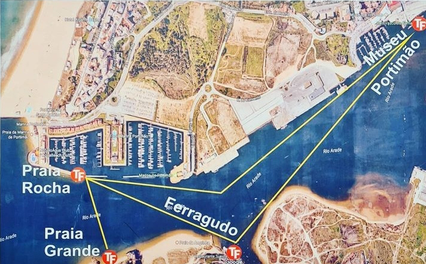
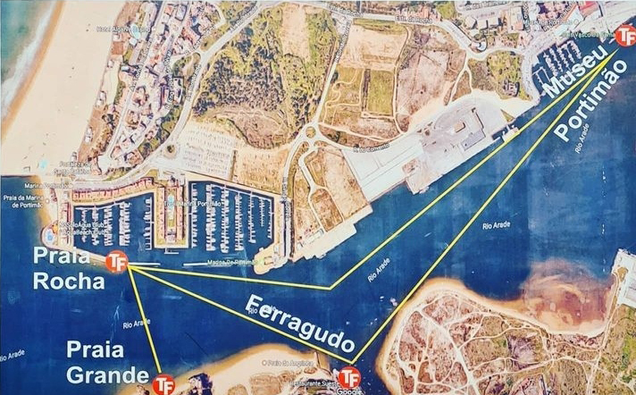

Where
To
Stay
The wedding party and close family and friends will be staying in
Ferragudo.
This is the area where Sean’s father has
had an apartment for many years and an area dearly loved by the
couple.
In fact, it is where the couple got engaged.

We would invite any guests who wished, to stay here with us.
Accommodation
Ferragudo is a small fishing village.
It is a well-kept secret and is very beautiful.
Accommodation here is not abundant. Therefore we recommend booking as early as possible. However, that being said there are some accommodations that do not release bookings for 2024 until 2024.
For apartments, we recommend Vitor’s Village, Vila Castelo Parque. Both hotels are around an 8 minute walk to the main square. (Please abr in mind that accommodation for Vila Costelo Parque does not go live on their website until late December/ early January)
Suites @ Portarade is located in the square.
There are only two hotels in Ferragudo. Both are a 20 minute walk from the square. Walking to the square from these hotels is all downhill but unfortunately walking back is uphill. It feels like a long walk when you are walking uphill in the heat. This is something to bare in mind if you wish to book either hotel. A taxi to or from the square would be about 5 minutes. However, also bare in mind that your hotel will order you a taxi down to the square but there are not many taxis in Ferragudo to bring you back.
- Hotel Casabela – This is a classic hotel with beautiful views and its own access to the beach
- Hotel Rural Brícia Du Mar – also nice but no views.
There are also a wide variety of accommodations on Airbnb that will host from 2 guests to much bigger parties. Again, if you wish to know how close the Airbnb is to the square, use ‘Restaurante Portarade’ as a reference.
Things to do in Ferragudo
Beaches
If you go to a beach in Ferragudo, look out for a man selling ‘Bolinhas’. These are donuts and are a classic beach tradition in Portugal. For 2 euro you can get a sugar donut or if you’re brave enough you can try the Portuguese classic donut with traditional filling.
Praia Grande
Pros
- The biggest beach in Ferragudo
- Has sunbeds to rent
- Has three beach bars
- Has water activities like Kayaking and Paddle Boarding and an inflatable water course
- Massages available
- Access to a nice cliff walk is at the end of the beach
- Big hill to get to it and a lot of steps down, which means you must climb back up the steps to leave the beach.
Praia da Angrinha
Pros
- This beach is closer to the village square
- There are no hills or steps to get to this beach
- This beach has the least shells and is the nicest to walk on
- No sunbeds to rent and no beach bars
Live Music
The couple recommends you go to ‘Escondidinho’ for live music. This beach bar is located on Praia Grande (so remember there are steps). It is a very relaxed vibe. Live music is played from 5-8pm on Tuesdays, Thursdays and Sundays Club Nau is also located on Praia Grande. It has live music every day in July (some better than others). The cocktails here are delicious but pricy for Portugal. We do NOT recommend getting the food here as it is also quite pricy and not the best. V5 is a small bar located just off the square. It has live music on Saturdays.
Shopping
Ferragudo has its own mini supermarket that has most of what you could need. The butcher does fabulous skewers for anyone who has opted for self-catering.
There is also a Lidl in Ferragudo about a 25 minute walk or a five minute drive. This is handy for stocking up on water as we do not recommend drinking the tap water anywhere in Portugal
Down either side of the square there are a few little souvenir shops
If you want to do more shopping that the few shops in Ferragudo, we recommend you go to Praia Da Roche. It is a short boat taxi across the bay (we recommend you do this as it is a nice thing to do anyway). The boat taxi return costs 8 euro per person.
Water Sports
On Praia Grande you can rent Kayaks and Paddle Boards. There is also an inflatable water course there too.
Places to eat in Ferragudo
The couple’s favourite spot to eat is O' Velho Novo. The food is delicious and the price is very reasonable. Family and close friends are invited to join the couple the night before the wedding. We plan to have dinner there. If you are interested in joining, please let Laura or Seán know.
The couple love brunch from Brunch in Rio. The food is fab and the interior is both cool in design and temperature.
Another nice brunch spot is Amigos. This is like a tapas style meal.
For Pizza, the couple always return to Pizzeria Delizia. They never fail. Their pasta is also very nice.
If you like Indian, we implore you to try Sikander. It is located in the square and it is absolutely delicious. It has all the normal dishes but its chefs specials menu is also magic. We recommend number 4 with lamb and number 7 with either chicken or lamb.
For lunch, you cannot beat the value for money in Port Arade and the food is always good. They are also a good option for dinner.
Portugal is famous for their fish. Aria is the couple’s favourite Fish restaurant. A waiter will bring out the catch of the day and you can have your pick. They bring the fish out for you and debone it in front of you. A great experience.
If you are looking for something a little more up market, Sueste is for you. Probably the most expensive restaurant in Ferragudo but the fish is amazing.
What to avoid?The couple do not rate Terre Cotta. This is an Italian. Although their pasta is freshly made, their menu is limited and Seán described his sauce as bland.
Club Nau has lovely cocktails but it is expensive. We do not recommend getting the food there as it is pricy and not great.
Praia da Rocha
Located across the bay, Praia da Roch is a more touristy area with plenty of hotels, bars and restaurants. You can enjoy a quick boat taxi from Praia da Roche to Ferragudo. A regular taxi would be around 12 minutes and taxi prices are very reasonable.
 

Recommended hotels:
Hotel Casino Algarve. If you book directly with them and use the code 'WED0724' you will get 5% off.
Hotel Da Roche
Oriental Hotel
Jupiter Hotel Algarve (enter code JUPITER for 5% off) - only fault with this hotel is that the pool is in shade from 4pm. We are very grateful to everyone who is willing to travel to Portugal for our wedding and understand that not everyone will want to stay where the wedding party are staying.
Other Locations
We are very grateful to everyone who is willing to travel to
Portugal for our wedding and understand that not everyone will
want to stay where the wedding party are staying.
Albufera is a great alternative .
The reception will be held outside Albufera and therefore a good
location for people who will be attending the main event only.
This is also a location with an abundance of
accommodation for our guests.